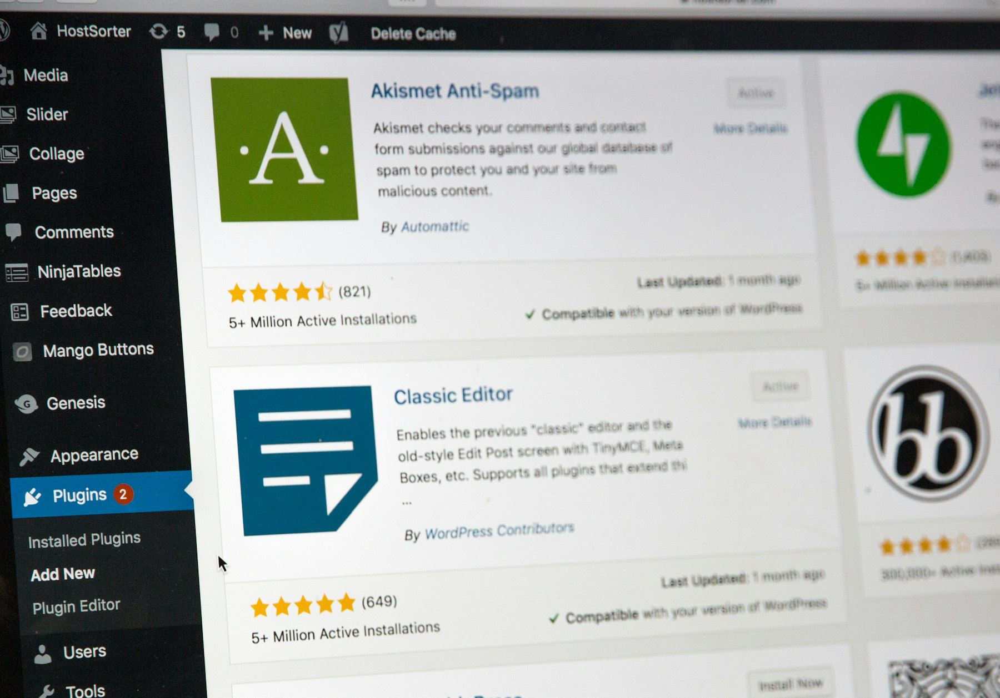

TL;DR
Run a 30-day ROI check: your AI tool should pay back at least 2x its cost in saved hours or higher project billings. Biggest mistake: Ignoring onboarding time—most see negative ROI in month one. Start with free plans like Grammarly or Canva AI, upgrade only if monthly benefit is clear. Downgrade or drop tools that fail to deliver measured value after a real project cycle.
Quick Verdict: Should You Pay for That AI Tool?
Think a $30/month Jasper, Grammarly, or Notion AI subscription justifies itself for freelancers? That depends entirely on whether the hours saved (and project quality delivered) creates at least 2x that value in new billings or free time you can sell.
Many make the mistake of signing up for AI tools with high hopes, convinced the software will handle creativity, analysis, or copywriting. In reality, too many chase the promise—and end up auto-renewing for months without reviewing if client outcomes or invoice size actually moved.
Best for: Freelancers handling multiple client projects monthly and billing at least $1,000—where project scale means shaving 4-6 hours can pay back a premium AI plan. Not worth it if: You're doing mostly admin, operate below $400/month income, or will spend days tweaking tools that only duplicate basic features your current stack already has.
Decision: Run a 30-day personal ROI trial. Track how many billable hours actually shift, compare that to your tool cost. A $25/month tool needs to create at least $50/month extra value or explicit time savings.
In practice: Most overestimate—by week two, the real work returns and the AI tool feels less like a partner and more like a recurring overhead.
Who Should (and Shouldn’t) Rely on Paid AI Tools?
Not every freelancer facing a busy week will gain from AI. The split comes down to your project mix and existing workflow:
If you’re a freelance writer or designer juggling 4+ clients where deadlines overlap, investing in Jasper or Canva AI can speed up content drafts and mockups. For those billing hourly—think consultants or editors—AI writing assistants free up research time.
However, solo web developers handling one site per month rarely recoup a $40/month AI dev platform, since main bottlenecks are client clarifications—not raw coding speed.
Best for: - Volume-focused freelancers (2+ projects per week) - Those able to routinize parts of delivery (templated proposals, briefs, social) - Professionals who hate repetitive admin but have real leverage if they save 3+ hours weekly
Not ideal for: - Seasonal freelancers (feast-or-famine months) - Newbies without defined workflow or regular client flow - Creatives whose bottleneck is client approval cycles, not content production speed
Scenario: A freelance brand designer handling fast-turnaround social packs for 6 regular clients could cut 6-8 hours/month using Canva AI’s auto-layout features. But a solo legal copywriter facing one complex brief per month? The tool will languish unused.
Where the Differences Start to Matter: Real ROI Tradeoffs After 30 Days
Freelancers trip up by looking only at subscription costs—while months pass and the tool quietly drains their budget. The most common mistake: Forgetting total cost of ownership, including setup time, API credits, and the hidden learning curve.
Here’s where the real tradeoffs emerge: 1. Monthly subscription ($20-60) rarely equals true monthly benefit if you don’t integrate the tool fully by week 2. 2. Time spent learning the AI interface, customizing prompts, or fixing odd output can quietly erase promised gains. 3. Runaway scenario: If you add multiple tools—Grammarly, Jasper, Zapier AI—the stacking costs overwhelm your monthly freelance earnings.
In practice: One Los Angeles-based freelancer tried five AI subscriptions in parallel for a 30-day sprint, but received only $110 in client bonus for faster turnaround—while his combined monthly software stack hit $89. Only after downgrading two subscriptions did he break even the following month.
Tradeoff: A paid tool is only worthwhile if, after 30 days, you can point to a concrete project win, freed-up billable hours, or a higher client rating. If this doesn’t happen, drop it—don’t let the sunk cost fallacy guide your decision.
For a deeper checklist on AI tool stacking, see our side-by-side comparison of AI subscriptions for small businesses.
Scenario: 30-Day ROI Analysis for a Freelance Designer Using Canva AI
Imagine a Berlin-based freelance designer billing €60/hour. She subscribes to Canva Pro with AI features for €13/month. Over 30 days, she: - Onboards and tests the Magic Design AI, spending 3 hours learning prompt templates. - Delivers 8 client projects, with 3 using the AI tool for social posts and banner layouts. - Measures time saved per project: average of 45 minutes, totaling 2.25 hours over the month.
Her net time savings (2.25 hours) equals €135 in potential extra billing. Subtract the AI subscription (€13) and her onboarding time (valued at €180) for that month. Her net return is actually negative in month one (-€58).
Week 5 and beyond: Onboarding is done. Monthly gains rise—now the tool might deliver consistent €100+ monthly net benefit if project flow remains steady.
In practice: Most AI tool breakeven points only show after a full month of projects and only if the freelancer’s workflow fits repeat delivery. For one-off creatives or starters, the sunk onboarding time means a negative ROI at first.
A step-by-step check: 1. Track time spent onboarding and customizing. 2. Log the number of times you actually use the tool in live projects. 3. Record hours saved or extra income attributable directly to the tool. 4. Review at the 30-day mark and project forward only if you see a net benefit.
Link: For more on tool onboarding and project fit, see our guide to AI stack setup for small teams.
Mistakes and Overkill Choices Freelancers Make in AI Tool Evaluations
Here’s where seasoned freelancers get caught: - Focusing only on initial software price, not on ongoing monthly commitment or renewal creep. - Ignoring training time—losing days dialing in prompts, only to abandon the tool a week later. - Overstating benefits because of initial excitement, forgetting to validate impact past the demo phase. - Stacking too many tools, making the workflow clunky or redundant (for example, running Jasper, Grammarly, and Notion AI—then not integrating them, so value goes unrealized). - Choosing overkill tools: A $79/month all-in-one marketing AI platform for a freelancer handling only two campaigns per quarter is a common mistake.
Best for: Those with the discipline and project volume to extract value every week.
Tradeoff: The more advanced the tool, the steeper the learning and the less forgiving for low-volume months.
Scenario: After onboarding, a freelancer realizes the AI tool only shaved off 30 minutes per week—not enough to justify the monthly $40 cost. The smarter decision? Cancel promptly and reassess at the next busy season.
Recommendation: How to Pick AI Tools by Freelance Type and Income Bracket

Here’s how to decide what’s worth it, tailored to your freelance profile and income:
If you’re under $500/month in earnings or just starting out, stick to free AI tiers or tools with long free trials (Canva AI, Grammarly Free, Notion AI’s limited use). Only upgrade once you’re regularly booking 3+ projects/month and see that time saved directly turns into extra billings or more free hours for new clients.
For those earning $1,000-5,000/month with sustained client flow: Opt for mid-tier plans ($20-40/month) that target your biggest manual workload—be it drafting, design, or admin automation. Review ROI each month: - If the tool lets you deliver a project 2-4 days faster or enables taking on an extra client, keep it. - If you spend more hours troubleshooting AI quirks than delivering work, downgrade.
High-income freelancers ($5,000+/month) with workflow complexity: Premium AI productivity tools like Jasper Unlimited or advanced Zapier AI become viable if they unlock multi-client dashboards, automated handoffs, or reporting. Invest in dedicated onboarding to minimize ramp-up mistakes.
Key decision: Tie every AI tool upgrade or renewal to a specific, measured outcome—never just inertia or fear of missing out. For a more granular breakdown by freelance discipline, our deep-dive on AI tool budgeting will help select a stack that scales profit, not just complexity.
FAQ
What metrics should I use to assess AI tool ROI?
Focus on hours saved per month, additional client capacity, and any clear bump in monthly revenue or client satisfaction. Include onboarding time and actual frequency of use. Log the exact number of projects where the tool enabled faster delivery or higher-quality work.
Are there any free AI tools worth considering for freelancers?
Yes—Grammarly Free, Notion AI’s basic features, and Canva AI’s free tier all offer core functionality without immediate cost. Start with these to benchmark tangible value before upgrading to paid plans.
How often should freelancers review their AI tool subscriptions?
Set a 30-day review cycle. Log actual usage, time saved, and outcomes. If the tool isn’t directly contributing to client billings or freeing up measurable work hours after a month, reassess or downgrade.
What is the biggest mistake freelancers make with AI tool investments?
The top mistake is focusing on the tool’s potential rather than tracking actual workflow gains and letting unnecessary subscriptions roll on. Many underestimate onboarding/training time and stack too many tools that never deliver net value.
This article is reviewed for practical usefulness and is routinely updated when new AI pricing, workflow, or subscription changes impact real-world freelance ROI decisions. Content is educational and not financial advice.
Next step
Use the article as a decision point, not just reading material. Your next system matters more than more browsing.
Search more articles
Find related tools, workflows, and guides.
Photo credits
- Photo 1: Tingey Injury Law Firm via Unsplash
- Photo 2: Nate Grant via Unsplash
- Photo 5: Jess Bailey via Unsplash
- Photo 6: Stephen Phillips - Hostreviews.co.uk via Unsplash